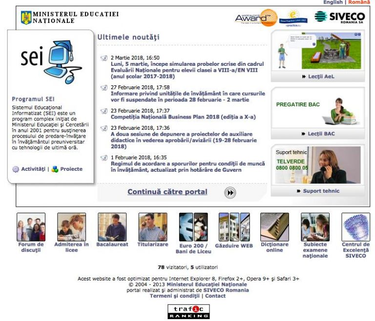
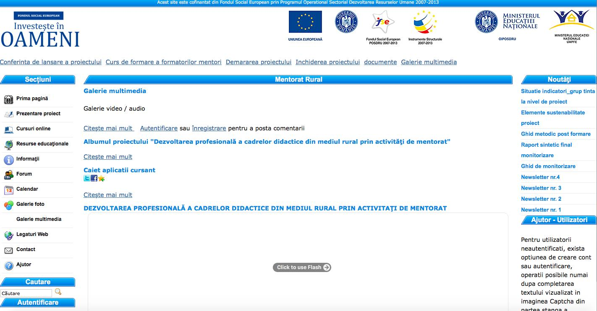
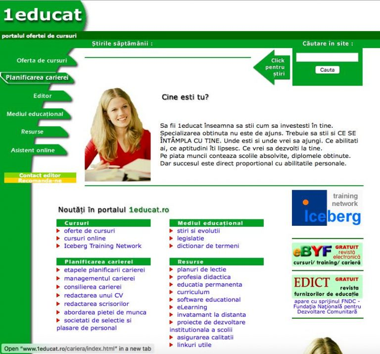
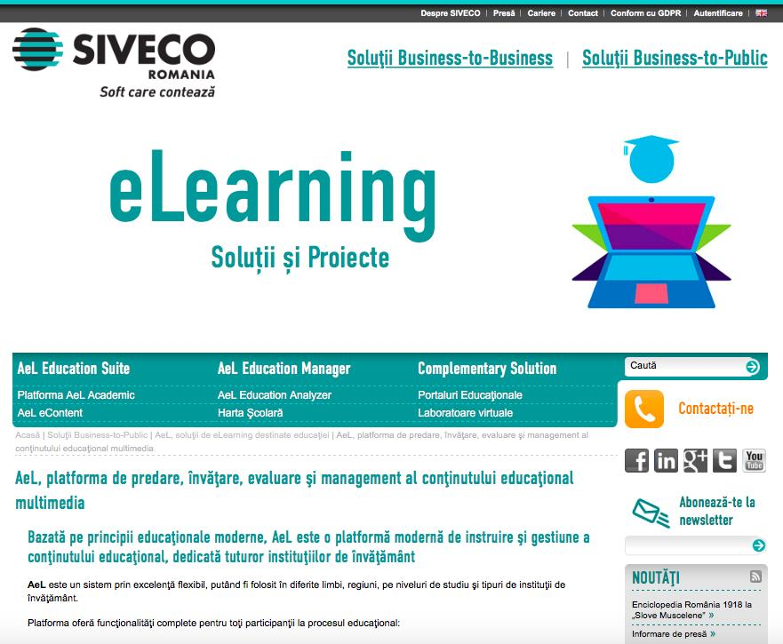
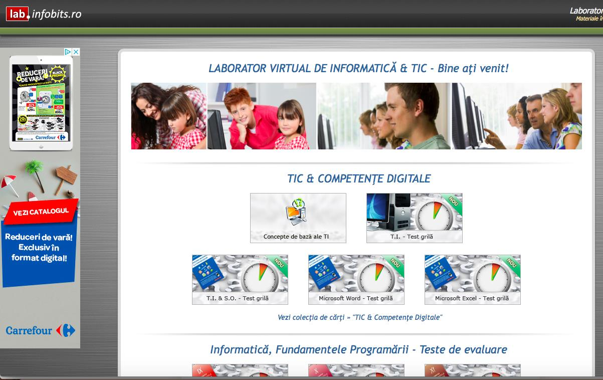
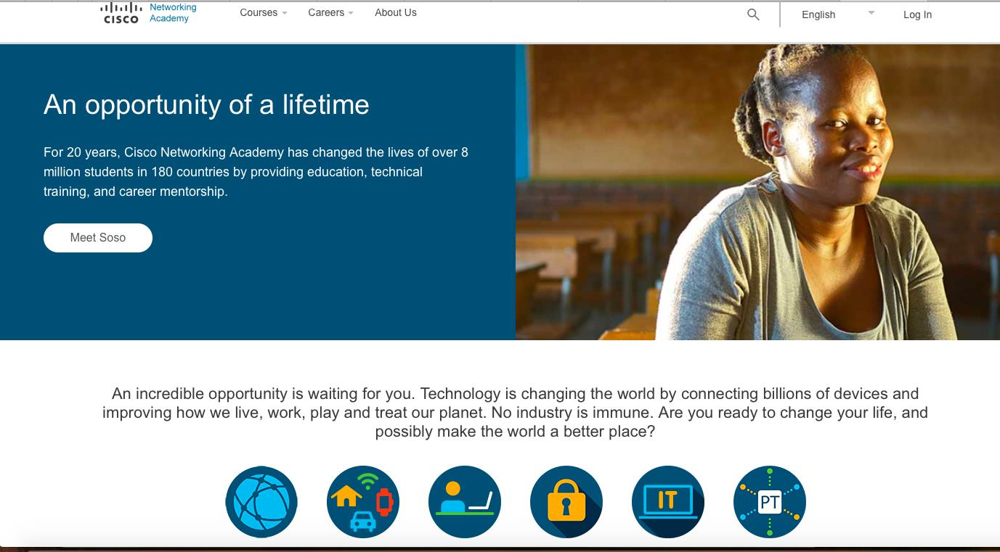

Data publicării: 12.06.2018
Autor articol: Corina Forascu
Învăţământul electronic sau e-learning reprezintă o modalitate actuală de dezvoltare a educaţiei (elearning 101), în concordanţă cu descoperirile tehnologice. În sens larg, prin elearning (sau e-learning) se înțelege totalitatea situațiilor educaționale în care se utilizează semnificativ mijloacele Tehnologiei Informației și Comunicării (TIC). Deși există delimitări destul de clare, frecvent termenul de elearning este privit ca sinonim cu multimedia learning, technology-enhanced learning (TEL), computer-based instruction (CBI), computer-based training (CBT), computer-assisted instruction or computer-aided instruction (CAI), internet-based training (IBT), web-based training (WBT), online education, virtual education. Una dintre cele mai bune definiții ale termenului de învăţământ electronic, pe care o vom adopta în cele ce urmează, este dată în (Dobre, 2010): “oferirea educaţiei, instruirii sau e-learning mai înseamnă învăţământul prin mijloace electronice”. Termenul este utilizat în zilele noastre şi ca termen unificator pentru o multitudine de tehnici de învăţare, instruire prin mijloace asistate de calculator. Învăţământul electronic se referă la utilizarea tehnologiilor Internetului pentru a furniza un vast şir de soluţii care amplifică performanţa şi cunoştinţele. În general, termenul de e-learning este sinonim cu online learning, Web based learning (Bartolome, 2008).
Alte câteva definiţii ale termenului de e-learning (Dobre, 2010):
- Orice act sau proces virtual utilizat pentru a obţine date, informaţii, abilităţi sau cunoştinţe. E-learning înseamnă astfel învăţarea într-o lume virtuală, în care tehnologia cooperează cu creativitatea umană pentru a accelera şi uşura cunoaşterea profundă a domeniului studiat.
- Oferirea unor oportunităţi de învăţare, instruire sau programe educaţionale cu ajutorul unor mijloace electronice
- Acoperă o vastă categorie de aplicaţii şi procese, precum: instruirea asistată de calculator, învăţarea prin intermediul Internetului/Intranetului (Web based learning), învăţământ oferit prin intermediul calculatorului (computer based learning), clase virtuale, colaborare online. Conţinutul electronic este oferit cu ajutorul Internetului, a Intranetului, a casetelor audio şi video, prin satelit, CD-ROM sau televiziune interactivă.
- Posibilitatea de a îmbunătăţi învăţământul prin utilizarea tehnologiei comunicaţiei (prin utilizarea Internetului, e-mailului, forumurilor de discuţii sau a software-ului colaborativ de tip wiki sau blog).
Elemente caracteristice ale învăţământului electronic :
- procesul de învăţare este orientat către cel instruit şi se realizează într-o locaţie virtuală;
- resursele educaţionale sunt accesibile pe Web şi distribuite (prin utilizarea, integrarea accesarea bibliotecilor electronice şi materialelor multimedia, prin antrenarea specialiştilor în discuţiile subiecţilor);
- instruiţii beneficiază de orientarea unui tutore (instructor, moderator) care planifică activitatea grupului de participanţi, supune dezbaterii acestora aspecte ale cursului în conferinţe asincrone (forum-uri de discuţii, blog-uri) sau sincrone (chat, clasă virtuală), furnizează resurse auxiliare, comentează temele, impune direcţii;
- prin interacţiune şi colaborare, grupul de participanţi formează pe parcursul cursului, de multe ori şi după, o comunitate virtuală; aceştia pot fi caracterizaţi prin aşa numita “fluiditate a rolurilor”, prin balansul continuu al rolului instructor-instruit în grupul de învăţare.
- materialul cursului are o componentă statică, cea pregătită de tutore împreună cu o echipă specializată, şi una dinamică, rezultată din interacţiunea participanţilor, din sugestiile, comentariile, resursele aduse de aceştia;
- cele mai multe medii de e-learning permit monitorizarea activităţii participanţilor, iar unele şi simulări, lucrul pe grupuri, interacţiunea audio, video.
Avantajele acestui tip de învăţare sunt următoarele: accesibilitate, flexibilitate, confortabilitate, utilizatorul putând hotărî singur, data şi ora la care se implică în activitatea de instruire.
Faţă de sistemul tradiţional de învăţământ, e-learning-ul prezintă numeroase avantaje:
- independenţa geografică, mobilitatea – posibilitatea de a accesa conţinutul materialului educaţional de oriunde şi oricând, cu ajutorul computerului personal şi a reţelei;
- accesibilitate online – o caracteristică importantă specifică acestui tip de educaţie, prin care se înţelege accesul la educaţie prin Internet în timp real, de oriunde şi oricând, 24 de ore din 24, 7 zile pe săptămână; nu există dependenţă de timp;
- prezentare concisă şi selectivă a conţinutului educaţional;
- individualizarea procesului de învăţare – fiecare instruit are un ritm şi stil propriu de asimilare şi se bazează pe un anume tip de memorie în procesul de învăţare (auditivă sau vizuală), parcurgerea cursurilor poate fi făcută treptat şi repetat, controlându-şi rapid progresele, beneficiind de un feedback rapid şi permanent; unii subiecţi au un randament mai bun în weekend, alţii la primele ore ale dimineţii;
- metode pedagogice diverse – programele e-learning trebuie să aibă la bază diverse metode pedagogice, care să ghideze subiecţii pe tot parcursul procesului de învăţare: de la parcurgerea materialelor didactice, la realizarea proiectelor, la evaluarea online şi până la certificarea programului, dacă este cazul; o serie de experimente care studiază efectul pe care îl au utilizarea diverselor medii în însuşirea cunoştiinţelor au dus la concluzia că, în general, un material educaţional diversificat este reţinut în proporţie de 80% prin ascultare, vizionare şi interactivitate;
- administrarea online – utilizarea sistemelor e-learning necesită asigurarea securităţii utilizatorilor, înregistrarea acestora, monitorizarea studenţilor şi a serviciilor oferite în reţea;
- costuri reduse de distribuţie – software-ul educaţional sau soluţiile electronice de învăţare nu sunt ieftine. Totuşi, costurile lor sunt mai reduse decât cele implicate de o sesiune de învăţare “clasică”, deoarece sunt eliminate cheltuielile de deplasare, închirierea spaţiilor pentru cursuri, cazarea şi masa subiecţilor;
- timp redus de studiu – în unele cazuri, în funcţie de soluţia de tehnică adoptată, şi timpul poate fi trecut la categoria reducerea costurilor: subiectul nu va întrerupe activitatea profesională pentru a urma un curs, ci va “pierde” doar câteva ore zilnic pentru a învăţa online sau offline, pe computer;
- interacţiuni sincrone şi asincrone – cele două tipuri de interacţiuni dintre instructori şi instruiţi se pot complete. Instruirea sincronă este instruirea care se desfăşoară în cadrul unei săli de clasă virtuale, în care instruiţii şi instructorii se întâlnesc şi acţionează ca şi cum s-ar afla fizic în acelaşi loc. Exemple de instruire medii de instruire sincronă sunt clasele virtuale, video sau audio conferinţele, comunicaţia dublă prin Internet. Instruirea asincronă, în care participanţii nu sunt conectaţi în acelaşi timp la reţea, este opusul instruirii sincrone.
- tehnologii dinamice diverse – acestea permit un feedback pronunţat, în timp real, şi evaluări formative şi sumative, calitative şi cantitative, realizate într-un mod facil şi de către evaluatorii cei mai avizaţi;
- dacă învăţământul tradiţional este organizat pe grupe de vârstă, cel online este organizat pe subiecte; într-o clasă virtuală pot fi reuniţi subiecţi de toate vârstele, cu pregătiri diferite, neglijând graniţele spaţiale.
Dezavantajele educaţiei de tip e-learning sunt:
- rata mare de abandon a studenţilor – acest tip de educaţie la distanţă necesită eforturi consistente şi susţinute din partea tuturor participanţilor la procesul instrucţional. Studenţii trebuie să fie extrem de motivaţi, altfel se instalează fenomenul de abandon care este mult mai frecvent în educaţia la distanţă decât în învăţământul tradiţional.
- necesită experienţă în domeniul utilizării calculatoarelor – cursanţilor li se solicită anumite cunoştinţe în domeniul IT.
- costuri mari pentru proiectare şi întreţinere – acestea includ şi cheltuieli cu tehnologia, transmiterea informaţilor în reţea, întreţinerea echipamentului, producerea materialelor necesare.
Comparativ, însă, cu toate costurile pe care le implică procesul educaţional clasic, costurile e-Learning sunt net mai mici.
Cu toate aceste dezavantaje sau limitări, experienţa platformelor e-learning deja funcţionale a demonstrat faptul că participanţii la educaţie prin intermediul noilor tehnologii e-learning se familiarizează în scurt timp cu mediul virtual şi intră relativ repede în ritmul natural al transmiterii şi, respectiv, însuşirii de cunoştinţe prin acest modern şi eficient tip de educaţie.
Odată cu apariţia Internetului în anii ’90 s-au creat condiţii pentru lărgirea utilizării programelor educaţionale de la un acces local la un acces la distanţă. Se poate considera acest moment ca fiind primul model de e-learning care respectă cerinţele unui astfel de sistem definit anterior. Acest prim model este denumit e-Learning 1.0.
Termenul de e-Learning 2.0 (Kumar, 2009) este utilizat pentru a se referi la noi moduri de a gândi despre e-learningul- inspirat de apariţia de Web 2.0. E-Learning 2.0 utilizează instrumente Web 2.0 în procesul de predare. Termenul de “Web 2.0” se referă la a doua generaţie de dezvoltare web şi design, care are scopul de a facilita comunicarea, schimbul de informaţii sigure, interoperabilitatea, precum şi colaborarea pe World Wide Web. Conceptele Web 2.0 au dus la dezvoltarea şi evoluţia comunităţilor bazate pe Web, găzduit de servicii şi aplicaţii, cum ar fi site-uri de social-networking, video-sharing de site-uri, wiki, blog-uri, folksonomies, care de curînd au făcut posibilă apariția unui nou concept, acela de învățare permanentă – Never Ending Learning (Krishnamurthy et al., 2018), anterior cunosct ca învățare pe tot parcursul vieții (Lifelong Learning) (Calvani et al., 2008).
E-learning în România
Pentru învățământul românesc, e-learning se dovedește a fi un instrument excelent, perioada actuală cunoscând o serie de eforturi de cercetare în domeniul educației prin intermediul mediilor electronice. Iniţial, conceptul de e-learning a înlocuit metodologia clasică de învăţământ la distanţă, materialele scrise fiind pe CD-uri. Ulterior, posibilităţile de conectare la Internet au facilitat realizarea unor medii colaborative, săli de clase virtuale, instruire sincronă şi asincronă.
Portaluri naţionale educaţionale:
- Portalul Ministerului Educaţiei, Cercetării, Tineretului şi Sportului: www.edu.ro.
Acest portal, apărut în anul 1998, prezintă activitatea Ministerului Educaţiei, Cercetării, Tineretului şi Sportului, fiind punctul central de prezentare a informaţiilor şi documentelor oficiale. Sunt prezentate ultimele evenimente, programe, analize, noutăţi, acte legislative din învăţământul preuniversitar, universitar, minoritar şi cercetare. Sunt descrise metodologiile de organizare şi desfăşurare a examenelor, modele de subiecte pentru examenele importante, inclusiv cel de bacalaureat.
- Portalul Educaţional SEI http://portal.edu.ro.

Cea mai mare comunitate educaţională din România, fiind principala sursă de informaţie, colaborare şi comunicare din învăţământul românesc. Portalul include o gamă largă de site-uri individuale, forum educaţional, http://forum.edu.ro, resurse educaţionale, conţinut educaţional digital interactiv, informaţii despre proiecte în domeniul educaţiei, instrumente de comunicare şi colaborare în masă şi multe altele.
- Site-uri dedicate examenelor naţionale http://admitere.edu.ro, http://titularizare.edu.ro, http://bacalaureat.edu.ro.
- Portal de găzduire de site-uri web pentru şcoli şi licee http://scoli.edu.ro şi http://licee.edu.ro.
- Un set extins de teste, întrebări pentru examenele naţionale, lista răspunsurilor corecte la subiecte de examen http://subiecte.edu.ro.
- Site dedicat proiectului pentru Educaţie Rurală http://mentoratrural.pmu.ro.

Portalul sprijină obiectivele programului, urmărind îmbunătăţirea accesului la o educaţie de calitate pentru elevii din mediul rural, exprimată prin rezultate şcolare mai bune, precum şi printr-un procent mai mare de promovabilitate, absolvire şi înscriere în cicluri superioare de învăţământ.
- Portal dedicat proiectului “Profesorul – creator de soft educaţional”, http://profesorulcreator.siveco.ro.
- 1educat – portalul ofertei de cursuri: www.1educat.ro.

1educat este un portal specializat în prezentarea ofertelor de cursuri, promovând perfecţionarea în anumite domenii de interes general. Conţine informaţii utile despre planificarea carierei şi mediului educaţional, precum şi numeroase resurse, dispunând şi de un asistent online.
- Şcoala Online: http://www.e-scoala.ro/ – Proiectul Şcoala Online oferă resurse gratuite utile elevilor, studenţilor, profesorilor, persoanelor dornice de instruire şi informare: dicţionare, biblioteci, eseuri, referate, cursuri, consiliere pentru e-learning şi altele.
Platforme e-learning utilizate în România
AEL

AEL (AeL) este o platformă integrată completă de instruire asistată de calculator şi gestiune a conţinutului, produs al firmei SIVECO, lansat în anul 2001. Oferă suport pentru predare şi învăţare, testare şi evaluare, administrarea conţinutului, monitorizarea procesului de învăţământ şi concepţie curriculară.
AeL este un sistem prin excelenţă flexibil, putând fi folosit în diferite limbi, regiuni, pe niveluri de studiu şi tipuri de instituţii de învăţământ. În prezent, această soluție de e-learning este implementată în peste 15.000 de școli din Europa, Orientul Apropiat, Africa și CSI (Comunitatea Statelor Independente). Biblioteca virtuală AeL eContent este una dintre cele mai bogate şi mai atractive colecţii de conţinut educaţional din lume, ce cuprinde 45.000 de obiecte de învăţare, pentru zeci de materii şcolare.
Principalele beneficii oferite de utilizarea platformei AeL în procesul de predare, învăţare şi evaluare sunt:
- pune la dispoziţia profesorilor un instrument complementar, flexibil şi eficient, sprijinind astfel procesul didactic;
- permite monitorizarea rezultatelor obţinute de elevi, atât pe perioada cursurilor, cât şi după finalizarea acestora;
- facilitează planificarea eficientă a resurselor (profesori, săli de curs);
- implică creșterea gradului de receptivitate şi asimilare al cunoştinţelor prin stimularea multisenzorială în prezentarea informaţiei, activitatea de explorare/căutare individuală a informaţiei şi de operare asupra ei, lucrul în echipă în rezolvarea unor sarcini de lucru, diversitatea surselor de informaţie;
- stimulează colaborarea în cadrul unor activități de grup;
- realizează trecerea de la învăţarea bazată pe memorarea mecanică a informaţiei (learning by memorizing), la învăţarea bazată pe experiment, pe descoperire, (learning by doing).
Laboratorul virtual de Informatică si Tehnologia Informației și a Comunicațiilor

Laboratorul Virtual de Informatică şi TIC (http://lab.infobits.ro) conţine bibliotecă virtuală, uşor accesibilă utilizatorilor. Oferă articole şi materiale practice în format PDF din categoriile:
- Informatică pentru liceu
- Informatică pentru gimnaziu
- Medii de programare
- Pachete de instalare
- Programare web
Constituie o platformă e-learning în concordanţă cu programa şcolară, pentru evaluarea Competenţelor Digitale, având inclus şi un sistem on-line de evaluare a cunoştinţelor, util pentru pregătirea acestui examen naţional. Tutorialele propuse sunt accesibile, cu o grafică atractivă, consistente ca informaţie şi reduse cantitativ, calităţi care le recomandă pentru lucrul la disciplinele informatice.
Platforma INSAM
Platforma INSAM este o platformă de evaluare în cadrul căreia au fost dezvoltate şi implementate instrumente şi mecanisme digitale de îmbunătăţire a procesului de evaluare/autoevaluare în învăţământul liceal.
Caracterul inovator al acestui proiect constă în baza de resurse digitale specifice (itemi de evaluare, standarde şi descriptori de performanţă), necesare pentru îmbunătăţirea proceselor evaluative şi de autopoziţionare/autoevaluare a elevilor din învăţământul liceal. Evaluarea obiectivă este de neînlocuit din perspectiva diversificării traseelor de învăţare, a oportunităţilor existente la final de ciclu şi pentru încadrarea ulterioară în câmpul muncii.
Proiectul oferă soluţii pentru următoarele aspecte problematice existente în sistemul de învăţământ preuniversitar actual (iTeach, 2012):
- Lipsa programelor de formare şi perfecţionare adresate cadrelor didactice, cu referire la evaluarea performanţelor elevilor;
- Lipsa unui sistem de evaluare unitar pentru toţi elevii, indiferent de mediul de provenienţă;
- Lipsa unui instrument digital de evaluare complex, cu utilitate atât pentru cadrul didactic în activitatea sa instructiv-educativă, cât şi pentru elev, în demersul său de autoevaluare;
- Lipsa unor programe generatoare de competenţe în utilizarea de noi tehnologii necesare tinerilor în viaţa de zi cu zi;
- Lipsa unor metode noi de evaluare, autoevaluare, orientare şi consiliere şcolară şi în carieră, pentru combaterea discriminărilor şi inegalităţilor, atât în privința evaluării performanţelor elevilor cât şi a inserţiei tinerilor în domeniul ocupational;
- Nevoia tinerilor de a-şi alege traseul şcolar şi profesional potrivit, în conformitate cu competenţele, cunoştinţele şi deprinderile dobândite.
NetSupport School
NetSupport School (Discipline Informatice, 2012) este un software educaţional dedicat managementului clasei de elevi., oferind profesorului şi elevilor un suport real în activitatea de predare-învăţare. Este un mediu interactiv care permite profesorilor să demonstreze, să monitorizeze şi să interacţioneze atât vizual cât şi auditiv cu elevii, lucru ce poate fi făcut cu o clasă întreagă de elevi, cu un grup sau individual, cu doar un singur elev. Acest mediu integrat poate fi un instrument foarte util la clasă datorită facilităţilor pe care le oferă:
- Gestionarea laboratorului de informatică;
- Gestionarea imprimantei;
- Gestionarea dispozitivelor;
- Transferul fişierelor;
- Facilităţi de instruire în timp real;
- Crearea de teste și chestionare.
NetSupport School are ca elemente de noutate următoarele:
- Afişarea ecranului profesorului pe staţiile de lucru ale elevilor;
- Vizualizarea ecranelor elevilor pe staţia profesorului;
- Trimiterea şi colectarea fişierelor în mod automat;
- Chat online;
- Control total asupra ecranelor, tastaturii sau cursorului staţiilor elevilor;
- Suport pentru wireless;
- Suport pentru planuri de lecţii interactive.
Platforma Oracle Academy (http://ilearning.oracle.com/)
Cursul INTRODUCTION TO COMPUTER SCIENCE este proiectat pentru licee, şcoli tehnice şi şcoli profesionale şi oferă posibilitatea de a urma un program de formare foarte structurat şi riguros ce dezvoltă abilităţi tehnice, analitice, şi de afaceri. Cursul este organizat pe secţiuni iar secţiunile de învăţare sunt urmate de secţiuni de evaluare.
Platforma ThinkQuest
Fundaţia Oracle pentru Educaţie a dezvoltat o platformă de învăţare online numită ThinkQuest () pentru a extinde beneficiile metodei de învăţare prin proiecte la nivel global. Aceasta includea, până în 2013:
- un mediu de dezvoltare a proiectelor colaborative (învăţarea prin proiecte oferă elevilor posibilitatea de descoperi, colaborând cu alţi colegi);
- un spaţiu competiţional ce permite elevilor să participe la concursuri (există mai multe secțiuni la care pot concura aceștia: ThinkQuest Projects – elaborarea unui site web în cadrul proiectelor ThinkQuest, Digital Media – realizarea unui produs media de tip: jurnal online, blog, site web stand-alone, fotografie, animaţie, anunţ de serviciu public, video sau o combinaţie a acestor elemente, Application Development – dezvoltarea unei aplicaţii interactive sau a unui joc);
- bibliotecă ce conţine lucrările participante la concursul ThinkQuest; (platforma dispune de o bibliotecă virtuală vastă, din care membrii se pot documenta);
- un program de dezvoltare profesională a profesorilor (cadrele didactice pot participa la un Institut de învăţare şi seminarii unde învaţă să integreze tehnologia în învăţarea prin proiecte şi să dezvolte competenţe ale secolului 21 în curriculum).
Cisco Networking Academy

Cisco Networking Academy (http://www.netacad.com) este un portal dedicat administratorilor, instructorilor şi elevilor, care include instrumentele necesare pentru managementul claselor şi utilizatorilor, precum şi conţinutul cursurilor şi evaluările.
Conţine cinci secţiuni principale:
- Headlines – secţiune în care se regăsesc anunțurile adresate tuturor academiilor Cisco, academiei locale, suportului tehnic.
- Teach – permite profesorilor administrarea claselor de elevi la care predau. Există posibilitatea ca un profesor să predea la una sau mai multe academii, iar în cadrul fiecărei academii, la una sau mai multe clase.
- Learn – permite înscrierea la cursul pentru instructori precum şi vizualizarea claselor anterioare.
- Professional Development – permite profesorilor să acceseze informaţii referitoare la propria dezvoltare profesională obţinută în calitate de instructor.
- Forums & Chat – permite instructorilor să participe la discuţii pe diverse teme legate de activitatea de predare şi învăţare.
Edu.Moodle.Ro
Moodle România oferă utilizarea platformei edu.moodle.ro cu titlu gratuit liceelor şi şcolilor din România şi propune următoarele activităţi:
- Postarea lecţiilor, bibliografiei, temelor;
- Evaluarea şi autoevaluarea cunoştinţelor;
- Crearea unor clase virtuale de colaborare între licee;
- Organizarea de concursuri;
- Cursuri comune în clasa virtuală;
- Pregătiri pentru bacalaureat;
- Comunicarea şi socializarea;
- Dezvoltarea de proiecte între licee.
Moodle oferă un mediu de comunicare, administrare cursuri şi evaluare în sistem electronic, oferind cursanţilor posibilitatea de a învăţa împreună. Este oferit gratis ca software open source (sub licenţă publică GNU) şi poate fi instalat pe orice calculator care poate rula PHP şi poate suporta o bază de date de tip SQL. Structura interfeţei unui site Moodle este organizată în jurul cursurilor.
Referințe
- Antonio Bartolomé. (2008). Web 2.0 and New Learning Paradigms. eLearning Papers.
- Antonio Calvani, Giovanni Bonaiuti, Antonio Fini (2008). Lifelong learning: What role for e-learning 2.0? Journal of e-Learning and Knowledge Society 4 (1): 179-187.
- Integrarea Tehnologiei Informaţiei și a Comunicaţiilor (TIC) în Curriculumul Național. Discipline Informatice. Suport de Curs. 2012
- Iuliana Dobre. (2010) Studiul critic al actualelor sisteme de e-learning. Academia Română, București 2010
- elearning 101. Concepts, trends, applications. Epignosis LLC, USA, 2014
- iTeach: Experiențe didactice. Nr 15, noiembrie 2012. ISSN 2247 – 966X
- Rupesh Kumar. (2009). E-Learning 2.0: Learning Redefined. Library Philosophy and Practice (e-journal). 284.
- T. Mitchell, W. Cohen, E. Hruschka, P. Talukdar, B. Yang, J. Betteridge, A. Carlson, B. Dalvi, M. Gardner, B. Kisiel, J. Krishnamurthy, N. Lao, K. Mazaitis, T. Mohamed, N. Nakashole, E. Platanios, A. Ritter, M. Samadi, B. Settles, R. Wang, D. Wijaya, A. Gupta, X. Chen, A. Saparov, M. Greaves, and J. Welling. (2018). Never-Ending Learning. Communications of the ACM, May 2018, Vol. 61, no. 5.